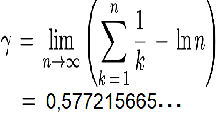

Các đề thi môn toán cao cấp

ĐỀ THI MÔN ĐẠI SỐ
a) Đề thi và đáp án năm 2012.b) Đề thi và đáp án năm 2011.
c) Đề thi và đáp án năm 2010.

ĐỀ THI MÔN GIẢI TÍCH I
a) Đề thi và đáp án năm 2012.b) Đề thi và đáp án năm 2011.
c) Đề thi và đáp án năm 2010. Cu Cu Cu

ĐỀ THI MÔN GIẢI TÍCH II
a) Đề thi và đáp án năm 2012.b) Đề thi và đáp án năm 2011.
c) Đề thi và đáp án năm 2009.
Các bài báo, tin tức, sách truyện kinh điển
1. Người sao hỏa
Một bài báo nói về thành tựu mà các nhà khoa học Hungary sống tại Mỹ đã cống hiến cho nhân loại. Họ được ví là những người ngoài hành tinh. Bài báo được viết dưới dạng song ngữ: tiếng Hung và tiếng Việt.
Nhấn vào đây xem Người sao Hỏa2. Mười người da đen nhỏ
Mười người da đen nhỏ, nguyên bản tựa gốc tiếng Anh: Ten Little Niggers là một tiểu thuyết hình sự của nhà văn Agatha Christie được nhà xuất bản Collins Crime Club phát hành lần đầu ở Anh ngày 6 tháng 11 năm 1939. Tác phẩm đôi khi còn được xuất bản (và chuyển thể thành phim) dưới tên Ten Little Indians. Tiểu thuyết nói về vụ án bí ẩn trên hòn đảo Soldier Island với 10 người bằng cách này hay cách khác đã thiệt mạng mà không hề có sự hiện diện hay dấu vết của thủ phạm. Đây được coi là một trong những tiểu thuyết hình sự xuất sắc và nổi tiếng nhất của Agatha Christie.
Tải xuống "Mười người da đen nhỏ"3. Ảnh chụp ở Sen Hồ Tây năm 2015

4. Sinh nhật lần thứ 80/82 anh Nguyễn Tường năm 2015


- Định lí Morley - Vẽ hình trong Canvas
- Tập {sin n, n=1,2,..} trù mật trong [-1,1] Khoảng cách Khoảng cách Khoảng cách Khoảng cách Khoảng cách Khoảng cách
- Khoảng cách Khoảng cách Khoảng cách Khoảng cách Khoảng cách Khoảng cách Khoảng cách Khoảng cách Khoảng cách
- Tập hợp Cantor và các tính chất đặc biệt gây ngạc nhiên của nó.
- Ứng dụng tập hợp Cantor vào xây dựng đường cong Peano. Khoảng cách Khoảng cách Khoảng cách Khoảng cách Khoảng cách Khoảng cách
- Khoảng cách Khoảng cách Khoảng cách Khoảng cách Khoảng cách Khoảng cách Khoảng cách Khoảng cách Khoảng cách
- Định lí Bernstein và một chứng minh.
- Chuỗi điều hòa và hằng số Euler. Khoảng cách Khoảng cách Khoảng cách Khoảng cách Khoảng cách Khoảng cách 
- Khoảng cách Khoảng cách Khoảng cách Khoảng cách Khoảng cách Khoảng cách Khoảng cách Khoảng cách Khoảng cách Khoảng
- Matrận nghịch đảo tổng quát của ma trận có kiểu bất kì m X n và ứng dụng của nó.
- Dãy số Fibonacci và các tính chất
Các vấn đề khác
(Tôi sẽ lần lượt đăng lên đây các bài toán/chủ đề được liệt kê dưới đây)